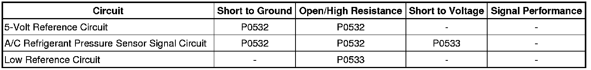

P0533
DTC P0532 or P0533
Diagnostic Instructions
* Perform the Diagnostic System Check - Vehicle (Initial Inspection and Diagnostic Overview) prior to using this diagnostic procedure.
* Review Strategy Based Diagnosis (Initial Inspection and Diagnostic Overview) for an overview of the diagnostic approach.
* Diagnostic Procedure Instructions (Initial Inspection and Diagnostic Overview) provides an overview of the diagnostic category.
DTC Descriptors
DTC P0532
- Air Conditioning (A/C) Refrigerant Pressure Sensor Circuit
DTC P0533
- Air Conditioning (A/C) Refrigerant Pressure Sensor Circuit Low Voltage
Diagnostic Fault Information

Circuit/System Description
The engine control module (ECM) monitors the high side refrigerant pressure through the A/C refrigerant pressure sensor. The ECM supplies a 5-volt reference and a low reference to the sensor. Changes in the A/C refrigerant pressure cause the sensor signal to the ECM to vary. When the pressure is high, the signal voltage is high. When the pressure is low, the signal voltage is low. When pressure is high, the ECM commands the cooling fans on. When pressure is too high or too low, the ECM will not allow the A/C compressor clutch to engage.
Conditions for Running the DTC
* Engine is running.
* Any of the conditions for setting the DTC are met for 15 seconds.
* Battery voltage is between 11-18 volts.
Conditions for Setting the DTC
* The ECM detects that the A/C pressure is less than 1 psi (0.01 volt).
* The ECM detects that the A/C pressure is more than 428 psi (4.92 volts).
Action Taken When the DTC Sets
* The ECM will not illuminate the malfunction indicator lamp (MIL)
* The ECM stores the Failure Records.
* The A/C compressor clutch is disabled.
Conditions for Clearing the DTC
* The history DTC will clear after 40 consecutive ignition cycles have occurred without a malfunction.
* The DTC will become history if the ECM no longer detects a failure.
Diagnostic Aids
A malfunction within the refrigerant system causing high pressure can cause this DTC to set.
Reference Information
Schematic Reference
HVAC Schematics (Electrical Diagrams)
Connector End View Reference
Component Connector End Views (Connector Views)
Description and Operation
Automatic HVAC Description and Operation (Automatic HVAC Description and Operation (Part 1))
Electrical Information Reference
* Circuit Testing (Component Tests and General Diagnostics)
* Connector Repairs (Component Tests and General Diagnostics)
* Testing for Intermittent Conditions and Poor Connections (Component Tests and General Diagnostics)
* Wiring Repairs (Component Tests and General Diagnostics)
Scan Tool Reference
Control Module References (Programming and Relearning)
Circuit/System Verification
Ignition ON, observe the scan tool A/C High Side Pressure Sensor parameter. The reading should be between 1 psi and 428 psi.
Circuit/System Testing
1. Ignition OFF, disconnect the A/C pressure sensor harness connector.
2. Ignition OFF, test for less than 1 ohm of resistance between the low reference circuit terminal 1 and ground.
• If greater than 1 ohm, test the low reference circuit for an open/high resistance. If the circuit tests normal, replace the ECM.
3. Ignition ON, test for 4.8-5.2 volts between the 5-volt reference circuit terminal 2 and ground.
• If less than 4.8 volts, test the 5-volt reference circuit for a short to ground or an open/high resistance. If the circuit tests normal, replace the ECM.
• If greater than 5.2 volts, test the 5-volt reference circuit for a short to voltage. If the circuit tests normal, replace the ECM.
4. Verify the scan tool A/C High Side Pressure Sensor parameter is less than 428 psi.
• If greater than 428 psi, test the signal circuit terminal 3 for a short to voltage. If the circuit tests normal, replace the ECM.
5. Install a 3-amp fused jumper wire between the signal circuit terminal 3 and the 5-volt reference circuit terminal 2. Verify the scan tool A/C High Side Pressure Sensor parameter is greater than 428 psi.
• If less than 428 psi, test the signal circuit for short to ground or an open/high resistance. If the circuit tests normal, replace the ECM.
6. If all circuits test normal, test or replace the A/C Pressure Sensor.
Repair Instructions
Perform the Diagnostic Repair Verification (Verification Tests) after completing the diagnostic procedure.
* Air Conditioning (A/C) Refrigerant Pressure Sensor Replacement (Service and Repair)
* Control Module References (Programming and Relearning)for ECM replacement, setup, and programming